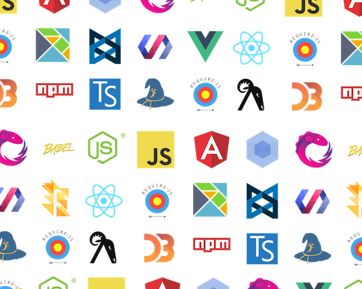

<!DOCTYPE html>
<html lang="en">
  <head>
    <meta charset="utf-8" />
    <meta name="viewport" content="width=device-width, initial-scale=1.0, maximum-scale=1.0, user-scalable=no" />

    <title></title>
    <link rel="stylesheet" href="dist/reveal.css" />
    <link rel="stylesheet" href="dist/theme/solarized.css" id="theme" />
    <link rel="stylesheet" href="plugin/highlight/zenburn.css" />
	<link rel="stylesheet" href="css/layout.css" />
	<link rel="stylesheet" href="plugin/customcontrols/style.css">

	<link rel="stylesheet" href="plugin/reveal-pointer/pointer.css" />


    <script defer src="dist/fontawesome/all.min.js"></script>

	<script type="text/javascript">
		var forgetPop = true;
		function onPopState(event) {
			if(forgetPop){
				forgetPop = false;
			} else {
				parent.postMessage(event.target.location.href, "app://obsidian.md");
			}
        }
		window.onpopstate = onPopState;
		window.onmessage = event => {
			if(event.data == "reload"){
				window.document.location.reload();
			}
			forgetPop = true;
		}

		function fitElements(){
			const itemsToFit = document.getElementsByClassName('fitText');
			for (const item in itemsToFit) {
				if (Object.hasOwnProperty.call(itemsToFit, item)) {
					var element = itemsToFit[item];
					fitElement(element,1, 1000);
					element.classList.remove('fitText');
				}
			}
		}

		function fitElement(element, start, end){

			let size = (end + start) / 2;
			element.style.fontSize = `${size}px`;

			if(Math.abs(start - end) < 1){
				while(element.scrollHeight > element.offsetHeight){
					size--;
					element.style.fontSize = `${size}px`;
				}
				return;
			}

			if(element.scrollHeight > element.offsetHeight){
				fitElement(element, start, size);
			} else {
				fitElement(element, size, end);
			}		
		}


		document.onreadystatechange = () => {
			fitElements();
			if (document.readyState === 'complete') {
				if (window.location.href.indexOf("?export") != -1){
					parent.postMessage(event.target.location.href, "app://obsidian.md");
				}
				if (window.location.href.indexOf("print-pdf") != -1){
					let stateCheck = setInterval(() => {
						clearInterval(stateCheck);
						window.print();
					}, 250);
				}
			}
	};


        </script>
  </head>
  <body>
    <div class="reveal">
      <div class="slides"><section  data-markdown><script type="text/template"><!-- .slide: class="drop" -->
<div class="" style="position: absolute; left: 0px; top: 0px; height: 700px; width: 960px; min-height: 700px; display: flex; flex-direction: column; align-items: center; justify-content: center" absolute="true">

## R4.A.10 - Compléments Web

## Partie 2 - Vue.JS
</div></script></section><section  data-markdown><script type="text/template"><!-- .slide: class="drop" -->
<div class="" style="position: absolute; left: 0px; top: 0px; height: 700px; width: 960px; min-height: 700px; display: flex; flex-direction: column; align-items: center; justify-content: center" absolute="true">

## Plan

- 1 - Vue.JS ?
- 2 - Data-binding et directives
- 3 - Évènements
- 3 - Methodes
</div></script></section><section  data-markdown><script type="text/template"><!-- .slide: class="drop" -->
<div class="" style="position: absolute; left: 0px; top: 0px; height: 700px; width: 960px; min-height: 700px; display: flex; flex-direction: column; align-items: center; justify-content: center" absolute="true">

## 1 - Vue.Js


Framework JS/Typescript crée en 2014 par Evan You en se basant sur AngularJS.

**Objectifs :** 
- Créer des applis web (Single Page Application)
- Gérer des données
- Faire des appels auprès d'API
- Développer des sites dynamiques et réactifs

Page officielle : https://vuejs.org/
</div></script></section><section  data-markdown><script type="text/template"><!-- .slide: class="drop" -->
<div class="" style="position: absolute; left: 0px; top: 0px; height: 700px; width: 960px; min-height: 700px; display: flex; flex-direction: column; align-items: center; justify-content: center" absolute="true">

## Ecosystème Web

Il existe de nombreux frameworks web client disponibles pour les développeurs, chacun ayant ses propres avantages et inconvénients. Il est donc important de bien évaluer leur fonctionnement avant de faire un choix pour s'assurer qu'ils répondent aux besoins du projet




Source : https://openupthecloud.com/3-questions-ask-changing-framework/
</div></script></section><section  data-markdown><script type="text/template"><!-- .slide: class="drop" -->
<div class="" style="position: absolute; left: 0px; top: 0px; height: 700px; width: 960px; min-height: 700px; display: flex; flex-direction: column; align-items: center; justify-content: center" absolute="true">

### Avantages de Vue.JS

- Le plus simple des framework (?)
- Framework en expansion
- Communauté
- Rapidité de developpement
- Re-use
- Maintenabilité
</div></script></section><section  data-markdown><script type="text/template"><!-- .slide: class="drop" -->
<div class="" style="position: absolute; left: 0px; top: 0px; height: 700px; width: 960px; min-height: 700px; display: flex; flex-direction: column; align-items: center; justify-content: center" absolute="true">

### Installation

Plusieurs types d'installations permettent de prendre en compte Vue.JS dans une application web. Par exemple en insérant la source local dans une balise script, en précisant le lien du CDN (Content Delivery Network), ou encore à partir de npm.

*HTML*
```js
<html>
    <head>
        <title>Vue.JS WebApp</title>
    </head>
    <body>
        <div id="app">
            {{ message }}
        </div>
        <script src="https://unpkg.com/vue@3/dist/vue.global.js">__SCRIPT_END__
        <script src="main.js">__SCRIPT_END__
    </boby>
</html>
```
</div></script></section><section  data-markdown><script type="text/template"><!-- .slide: class="drop" -->
<div class="" style="position: absolute; left: 0px; top: 0px; height: 700px; width: 960px; min-height: 700px; display: flex; flex-direction: column; align-items: center; justify-content: center" absolute="true">

*JS*
```js
<script> 
	const { createApp } = Vue // init Vue.Js app
	createApp({
		data() { //data
			return {
				message: 'Hello Vue!' 
			}
		}
	}).mount('#app') // set div scope
__SCRIPT_END__
```
</div></script></section><section  data-markdown><script type="text/template"><!-- .slide: class="drop" -->
<div class="" style="position: absolute; left: 0px; top: 0px; height: 700px; width: 960px; min-height: 700px; display: flex; flex-direction: column; align-items: center; justify-content: center" absolute="true">

## 2 - Data

Mise à jour des données dans dans les deux sens (modèle / vue)

*html*
```html
<div id="app">
    {{ message }}
    {{ message.toUpperCase() }}
</div>
```
*js*
```js
data() { //data
	return {
		message: 'Hello Vue!' 
	}
}
```
</div></script></section><section  data-markdown><script type="text/template"><!-- .slide: class="drop" -->
<div class="" style="position: absolute; left: 0px; top: 0px; height: 700px; width: 960px; min-height: 700px; display: flex; flex-direction: column; align-items: center; justify-content: center" absolute="true">

## Directives

Les directives permettent d'injecter des valeurs liées dynamiquement entre elles, entre le model et la vue (cf. Bindings)

### v-bind

```html
</img>
```

### v-once
Mise a jour unique puis dé-synchronisation entre le modèle et la vue. Si le modèle évolue, la vue ne sera pas mise à jour.

``` html
<div v-once>
   {{ message }}
</div>
```
</div></script></section><section  data-markdown><script type="text/template"><!-- .slide: class="drop" -->
<div class="" style="position: absolute; left: 0px; top: 0px; height: 700px; width: 960px; min-height: 700px; display: flex; flex-direction: column; align-items: center; justify-content: center" absolute="true">

### v-html
Il est également possible d'injecter de l'HTML brut, par exemple lorsque l'on souhaite afficher une variable qui contient des balises html.
```js
// variable title dans le fichier de script js
title = "<h1>Mon titre de page</h1>"
```

```html
<div v-html="title">
</div>
```

### v-model

La directive v-model permet de construire des formulaires dynamiques et complexes.
```html
<input v-model="pseudo" type="text" ></input>
<div>
    Value : {{ pseudo }}
</div>
```
</div></script></section><section  data-markdown><script type="text/template"><!-- .slide: class="drop" -->
<div class="" style="position: absolute; left: 0px; top: 0px; height: 700px; width: 960px; min-height: 700px; display: flex; flex-direction: column; align-items: center; justify-content: center" absolute="true">

### v-if, v-else-if et v-else

Ajout de conditions dans la vue pour filtrer les affichages en fonction des variables du modèle.

``` html
<div v-if="nb_message > 20 ">
    Grade : Gold
<div>
<div v-else-if="nb_message > 10">
    Grade : Silver
</div>
<div v-else>
    Grade : Bronze
</div>
```

### v-show

Affiche ou non le bloc html en fonction de la variable isAuthenticated

```html
<div v-show="isAuthenticated">
  {{ welcome_message }}
</div>
```
</div></script></section><section  data-markdown><script type="text/template"><!-- .slide: class="drop" -->
<div class="" style="position: absolute; left: 0px; top: 0px; height: 700px; width: 960px; min-height: 700px; display: flex; flex-direction: column; align-items: center; justify-content: center" absolute="true">

### v-for
Itération sur une liste d'éléments

``` html
<div v-for="item in items">
  {{ item.text }}
</div>
```

Il est également possible de préciser un alias pour l'index

```html
<div v-for="(item, index) in items"></div>
<div v-for="(value, key) in object"></div>
<div v-for="(value, name, index) in object"></div>
```
</div></script></section><section  data-markdown><script type="text/template"><!-- .slide: class="drop" -->
<div class="" style="position: absolute; left: 0px; top: 0px; height: 700px; width: 960px; min-height: 700px; display: flex; flex-direction: column; align-items: center; justify-content: center" absolute="true">

## Evènements

Tout comme il est possible de lier les variables du modèle à la vue, il est inversement possible de prendre en compte les évènements de la vue pour déclencher des actions. On retrouve ainsi les évènements classiques tel que le click, keydown, submit (...).
</div></script></section><section  data-markdown><script type="text/template"><!-- .slide: class="drop" -->
<div class="" style="position: absolute; left: 0px; top: 0px; height: 700px; width: 960px; min-height: 700px; display: flex; flex-direction: column; align-items: center; justify-content: center" absolute="true">

Le préfixe Vue.JS est v-on.

- v-on:click
- v-on:keydown
- v-on:submit

Depuis la dernière version de Vue.Js, une syntaxe plus courte est également utilisable.

```html
<button v-on:click="message += '!'">Add an "!"</button>
<button @click="message += '!'">Add an "!"</button>
```
</div></script></section><section  data-markdown><script type="text/template"><!-- .slide: class="drop" -->
<div class="" style="position: absolute; left: 0px; top: 0px; height: 700px; width: 960px; min-height: 700px; display: flex; flex-direction: column; align-items: center; justify-content: center" absolute="true">

Il existe aussi un certain nombre de modificateurs d'évènements qui permettent de caractériser des comportements.

- .stop pour arrêter les propagation
- .prevent pour bloquer le rechargement
- etc..

```html
<!-- the click event's propagation will be stopped -->
<a @click.stop="doThis"></a>

<!-- the submit event will no longer reload the page -->
<form @submit.prevent="onSubmit"></form>

```
Doc : https://vuejs.org/guide/essentials/event-handling.html#event-modifiers
</div></script></section><section  data-markdown><script type="text/template"><!-- .slide: class="drop" -->
<div class="" style="position: absolute; left: 0px; top: 0px; height: 700px; width: 960px; min-height: 700px; display: flex; flex-direction: column; align-items: center; justify-content: center" absolute="true">

## Méthodes


**Exemple - Compteur** 
```js
<html lang="en">
	<head>
		<title>Vue JS App</title>
	</head>
	<body>
		<div id="app">
		<h1>Compteur</h1>
		<h2>Valeur : {{ compteur }}</h2>
		<button v-on:click="compteur++">Plus</button>
		<button @click="compteur--">Moins</button>
		<button v-on:click="addCount">Méthode +</button>
		<button @click="delCount">Méthode -</button>
		</div>
		<script type="module">
			import { createApp } from 'https://unpkg.com/vue@3/dist/vue.esm-browser.js'
			createApp({
				data() {
					return {
						compteur: 0
					}
				},
				methods: { //methods
					addCount: function() {
						this.compteur++;
					},
					delCount: function() {
					this.compteur--;
					},
				}
			}).mount('#app')
		__SCRIPT_END__
	</body>
</html>
```
</div></script></section><section  data-markdown><script type="text/template">

</script></section></div>
    </div>

    <script src="dist/reveal.js"></script>

    <script src="plugin/markdown/markdown.js"></script>
    <script src="plugin/highlight/highlight.js"></script>
    <script src="plugin/zoom/zoom.js"></script>
    <script src="plugin/notes/notes.js"></script>
    <script src="plugin/math/math.js"></script>
	<script src="plugin/mermaid/mermaid.js"></script>
	<script src="plugin/chart/chart.min.js"></script>
	<script src="plugin/chart/plugin.js"></script>
	<script src="plugin/menu/menu.js"></script>
	<script src="plugin/customcontrols/plugin.js"></script>
	<script src="plugin/reveal-pointer/pointer.js"></script>

    <script>
      function extend() {
        var target = {};
        for (var i = 0; i < arguments.length; i++) {
          var source = arguments[i];
          for (var key in source) {
            if (source.hasOwnProperty(key)) {
              target[key] = source[key];
            }
          }
        }
        return target;
      }

	  function isLight(color) {
		let hex = color.replace('#', '');

		// convert #fff => #ffffff
		if(hex.length == 3){
			hex = `${hex[0]}${hex[0]}${hex[1]}${hex[1]}${hex[2]}${hex[2]}`;
		}

		const c_r = parseInt(hex.substr(0, 2), 16);
		const c_g = parseInt(hex.substr(2, 2), 16);
		const c_b = parseInt(hex.substr(4, 2), 16);
		const brightness = ((c_r * 299) + (c_g * 587) + (c_b * 114)) / 1000;
		return brightness > 155;
	}

	var bgColor = getComputedStyle(document.documentElement).getPropertyValue('--r-background-color').trim();
	var isLight = isLight(bgColor);

	if(isLight){
		document.body.classList.add('has-light-background');
	} else {
		document.body.classList.add('has-dark-background');
	}

      // default options to init reveal.js
      var defaultOptions = {
        controls: true,
        progress: true,
        history: true,
        center: true,
        transition: 'default', // none/fade/slide/convex/concave/zoom
        plugins: [
          RevealMarkdown,
          RevealHighlight,
          RevealZoom,
          RevealNotes,
          RevealMath.MathJax3,
		  RevealMermaid,
		  RevealChart,
		  RevealCustomControls,
		  RevealMenu,
	      RevealPointer,
        ],


    	allottedTime: 120 * 1000,

		mathjax3: {
			mathjax: 'plugin/math/mathjax/tex-mml-chtml.js',
		},
		markdown: {
		  gfm: true,
		  mangle: true,
		  pedantic: false,
		  smartLists: false,
		  smartypants: false,
		},

		mermaid: {
			theme: isLight ? 'default' : 'dark',
		},

		customcontrols: {
			controls: [
				{id: 'toggle-overview',
				title: 'Toggle overview (O)',
				icon: '<i class="fa fa-th"></i>',
				action: 'Reveal.toggleOverview();'
				},
			]
		},
		menu: {
			loadIcons: false
		}
      };

      // options from URL query string
      var queryOptions = Reveal().getQueryHash() || {};

      var options = extend(defaultOptions, {"width":960,"height":700,"margin":0.04,"controls":true,"progress":true,"slideNumber":true,"transition":"slide","transitionSpeed":"default"}, queryOptions);
    </script>

    <script>
      Reveal.initialize(options);
    </script>
  </body>

  <!-- created with Advanced Slides -->
</html>
